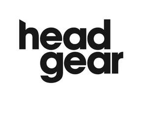

Trade Mark Journal No.2025/027 4 July 2025
UK00004219717 16 June 2025 (8,9,11,20,21,25,26)

- Class 8
- Hand tools and instruments; hair clippers; beard clippers; appliances for removal of hair, body hair or facial hair; electric devices for cutting, trimming or removing hair; hair clippers; electric hair clippers; scissors; hairdressing scissors; tweezers; hair removing tweezers; hair styling apparatus and implements; apparatus for curling the hair; hair curling irons; hair waving appliances; hair tongs; crimping irons for the hair; rollers for curling the hair; hand-operated tools for hairdressing; razors; cutlery; hand tools and implements all relating to hairdressing and personal grooming; electrical crimping irons for the hair; electrical hair waving apparatus; electrical appliances for perming the hair; electrical appliances for styling the hair; electrical appliances for the care of the hair; electrical hair straighteners; electrically heated rods for curling hair; electrical curling irons; hair styling implements; hair waving appliances; parts and fittings for all the aforesaid goods.
- Class 9
- Teaching apparatus; mannequin heads for teaching and training purposes; hairdressing mannequins; parts and fittings for all the aforesaid goods.
- Class 11
- Apparatus for heating and drying; apparatus for ventilating; apparatus for drying the hair; infra-red apparatus for drying the hair; hairdryers; accessories and attachments for hairdryers, including brushes, nozzles and diffusers; parts and fittings for all the aforesaid goods.
- Class 20
- Furniture; mirrors; hairdressers' chairs; mannequins; mannequin heads for storing and displaying wigs and hairpieces; mannequin heads for teaching and training purposes; hairdressing mannequins; parts and fittings for all the aforesaid goods.
- Class 21
- Brushes; brushes for the hair; combs for the hair; sponges; utensils, containers and dispensers for toiletries and hair care preparations; heated hairbrushes; parts and fittings for all the aforesaid goods.
- Class 25
- Hairdressers' capes; hairdressers' aprons; hairdressers' gowns; hairdressers' tunics; cutting collars.
- Class 26
- Articles for the hair; Electric hair rollers; hair clips; crocodile clips for the hair; sectioning clips for the hair; hairbands; barrettes; hair slides; bows for the hair; hair bands; hair ribbons; false hair; hair pieces; hair weaves; hair tresses; grips for the hair; hair colouring caps; highlighting caps; hair curling pins; hair fasteners; hairslides; hair nets; hair ornaments; hair pins; hair rollers; strips of plastics for use in highlighting hair; hair curlers; electrical apparatus for curling hair; electric hair rollers.
The Avec Corporation Limited
Representative: Murgitroyd & Company